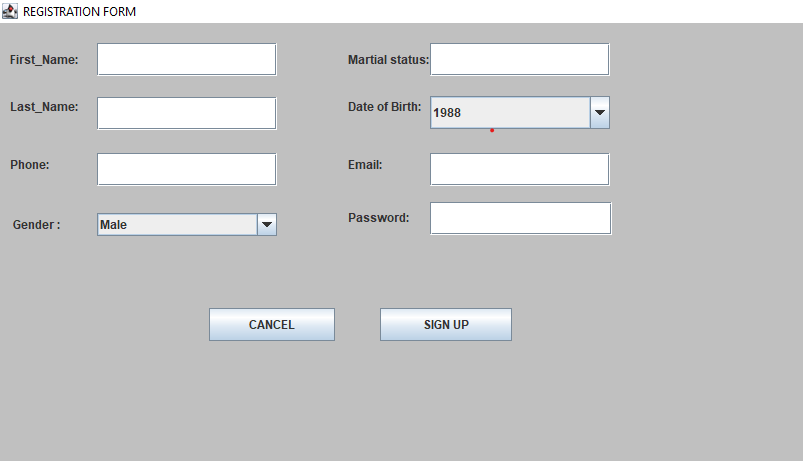
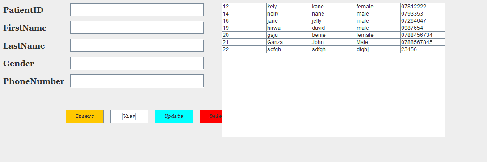
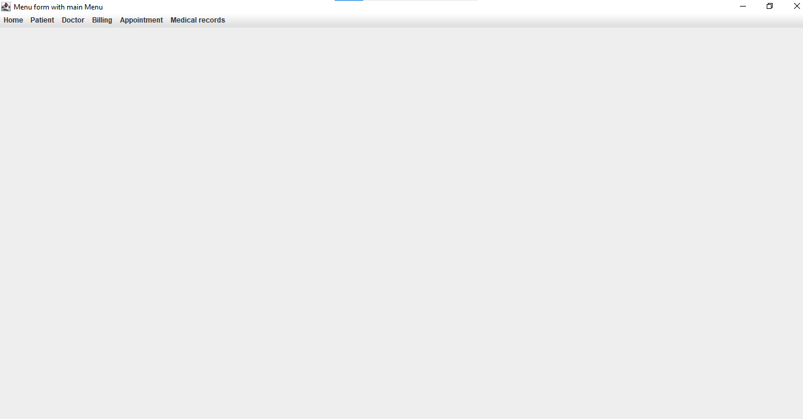
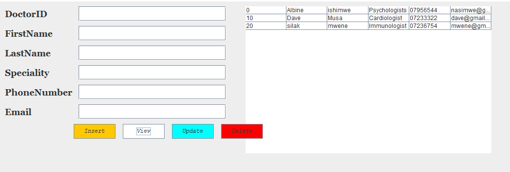
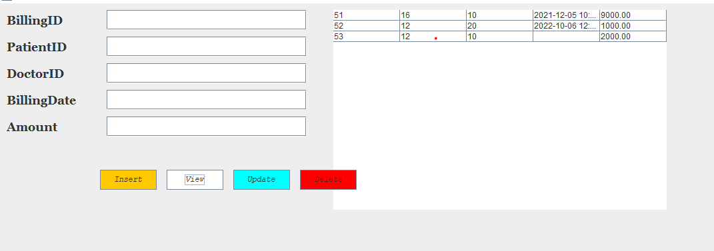

Nid This can be difined as Nurse id it is auto increment
Name : is the name of Nurse
Gender :Gender of Nurse
Telephone :phone number Nurse
Email :Email of Nurse
In this chapter I will be describing how powerful general purpose programming language was used to create the analyzed system. Under this chapter I will undergo full detail of how everything will function together with database that have been describe above and how it cope with full analyzed system.
So let look together how the system will function one by one from the beginning up to the end.
For patient_tracker implemented in Java, the login functionality typically involves creating a user interface for users to enter their credentials (email and password) and click on Login Button to confirm your credentials according to your information you have been assigned in ACCOUNT TABLE in database. If you have to create account you can go on create new account button in order to create new account
To create a new new patient to collect patient information, validate input, and then store the information Account table in the database. Create new account method to inserts the user information into the database. You would need to implement methods for getting user input, validating input.
Creating a menu form for a patient_tracker involves designing a user interface (UI) that allows users to navigate through different functionalities of the system. Such as home, patient, doctor, nurse, clinic, appointment, service: If you want to go on patient form you can hospital on patient, all form you want to go you may have to click on it.
This Patient form contain all information you want on doctor and activity you want to do on patient. This help user to identify what you want. You can insert patient details Pid, Name, Gender, Telephone, Email, Address and table list if all data you insert can be displayed. You may have view button to display all information you may have to insert, update button to update information you want and delete button information you want.

This patient form contain all information you want on doctor and activity you want to do on doctor This help user to identify what you want. You can insert Doctor details Did, Name, Telephone, Email, Qualification you can choose qualification you want, Specialisation you can choose specialization you want and table list if all data you insert can be displayed. You may have view button to display all information you may have to insert, update button to update information you want and delete button information you want.
This doctor form contain all information you want on nurse and activity you want to do on nurse This help user to identify what you want. You can insert nurse details Nid, Name, Gender you can choose gender you want, Telephone, Email and table list if all data you insert can be displayed. You may have view button to display all information you may have to insert, update button to update information you want and delete button information you want.
This billing form contain all information you want on service and how patient pays their due. relationship with the clinic form for Cid ,relationship with appointment form for Aid where you can write Pid, Cid, Did, Aid you may inserted on database.
